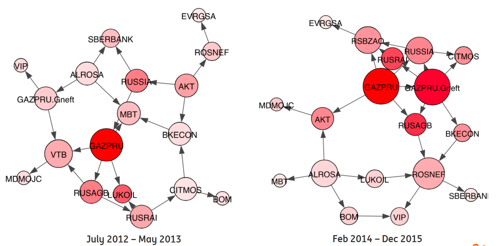
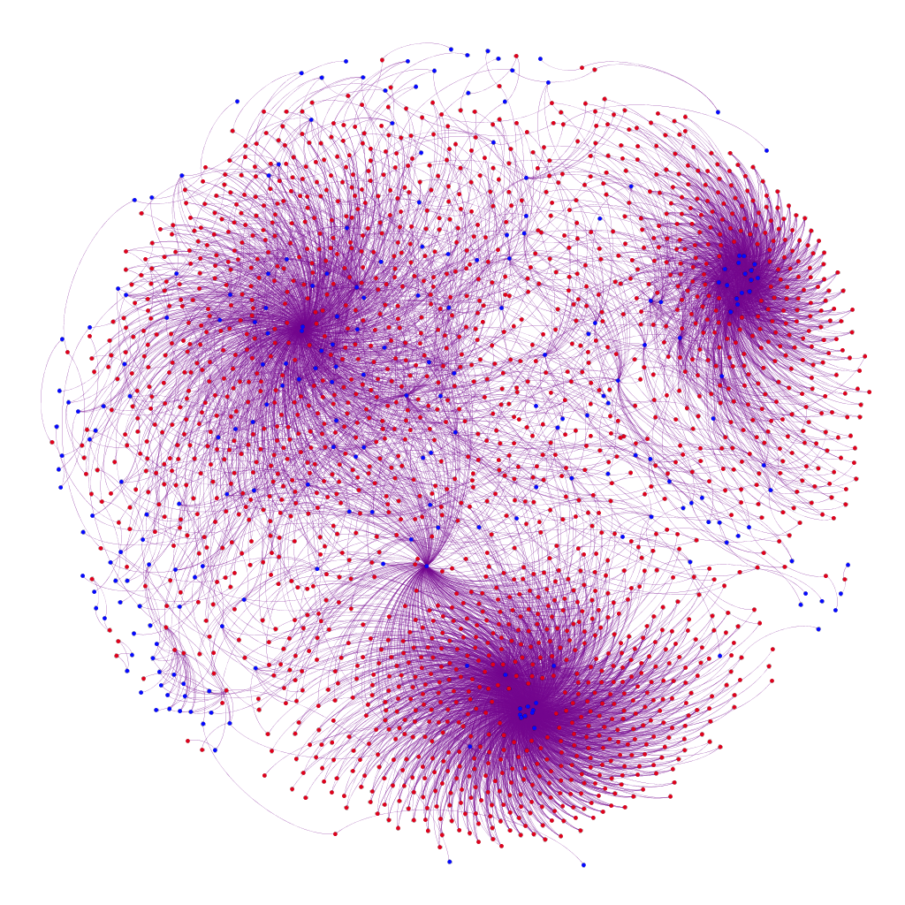

Sumit Sourabh
About meI am currently working as a front office Quantitative Analyst within Financial Markets at ING Bank in Amsterdam. At ING, I focus on pricing and risk management of financial derivatives using mathematical modelling and data-driven techniques. I have a joint position as a Research Scientist at Computational Science Lab within Informatics Institute, University of Amsterdam. At UvA, the primary focus of my research is network-based techniques in finance for trading and credit risk management. I am associated with H2020 EU BigData Finance project: Machine Learning for Trading and Risk Management. I did my PhD in Mathematics at Institute for Logic, Language and Computation, University of Amsterdam, and Integrated Masters in Mathematics and Scientific Computing from Indian Institute of Technology (IIT) Kanpur, India. Research ThemesSystemic Risk and Financial Complexity Derivatives markets play a crucial role in the interconnectedness of financial systems, and currently a large volume (with outstanding notional amounts in trillions of USD) of derivatives are actively being traded between financial institutions, corporates and individual investors. Post the financial crisis of 2007-08, regulators have introduced a number of valuation adjustments (xVA) to cover credit, funding and capital cost which financial institutions face in OTC derivatives transactions. In context of xVA, wrong-way risk (WWR), which is caused by an adverse correlation between exposure and credit, can have significant consequences for risk management. Our objective is to use data-driven network-based methodologies for xVA modelling, focusing particularly on WWR. PyData presentation on Learning Credit NetworksData-driven methods for the auditI am co-supervising Marcel Boersma who is working on his PhD project funded by KPMG on this theme. The main objective of this research is to develop a framework that uses and combines various advanced analytical methods for the purpose of the audit. This framework can be used to understand the structures of the entity and confirm our understanding of the entity being audited. Due to the increased operational complexity of large entities we propose to use advanced methods from the complex systems to build a mathematical representation of the entity. The most important contribution is to develop novel techniques using state-of-the-art computational methods to analyse available data of the entity to obtain audit evidence. Publications
Quantitative Finance, Network Theory and Machine LearningPhD Thesis
| ||||||
TeachingTogether with Prof. Drona Kandhai, I am partially responsible for the lectures, lab assignments and supervision of individual projects in the following courses in Graduate School of Informatics at University of Amsterdam.
| ||||||
Funding SourcesWe gratefully acknowledge the funding from the sources below which support our research activities. |